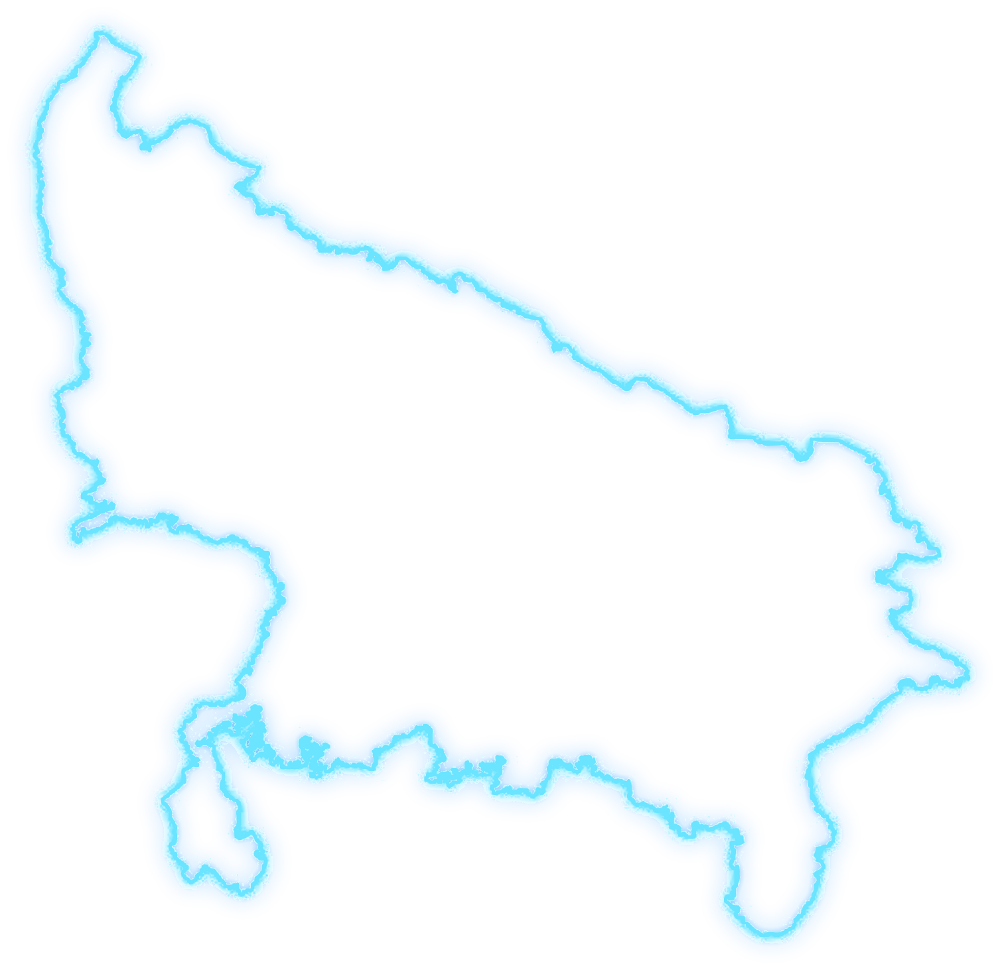

403Assembly constituenciesExplore seat-level results and profiles
POLITICS, EXPLAINED WITH DATA
Every constituency.
Every election.
One platform.
Explore Uttar Pradesh's political landscape through election results, constituency profiles, local issues and data-led analysis.
✓ Source-led research · Clear methodology · Independent analysis
UP POLITICAL LANDSCAPE DATA EXPLORER

ASSEMBLY CONSTITUENCIES403
LOK SABHA SEATS80
NEXT ASSEMBLY ELECTION2027
YOUR GUIDE TO UTTAR PRADESH
Explore politics beyond the headlines.
Start with election outcomes, explore the people’s constituencies, or compare possible scenarios for 2027.
PHASE 01 UTTAR PRADESH
80Lok Sabha constituenciesUnderstand parliamentary contests
2027Next Assembly electionForecasts are scenarios, not certainties
Where would you like to begin?
CHOOSE A DATA PATH
Look back at electionsCompare results, winners and margins.↗
Explore a constituencyFind a seat and open its profile.↗
Look ahead to 2027Review scenarios and assumptions.↗
✓
Built around clarity. Verified results, sourced facts, estimates and political opinion should be clearly distinguished. Some charts and features are still prototype previews.
START EXPLORING
Search any constituency
Search an Assembly or Parliamentary seat, district, or 2017/2022 Assembly candidate.
POPULAR:
THE DATA DESK
View all election data ↗
Election centre
Explore the results that shape Uttar Pradesh politics.
ASSEMBLY
Uttar Pradesh Assembly Results
Compare party standings and vote shares, then explore candidate-wise results in all 403 constituencies.
PARLIAMENT
Uttar Pradesh Parliamentary Results
Compare party seats, vote shares and candidate results across all 80 Lok Sabha constituencies.
80parliamentary
constituencies
constituencies
LOCAL GOVERNMENT
LOCAL
Municipal & Panchayat
Urban local bodies and rural local elections, organized by district and local-body type.
LOOKING AHEAD2027 Assembly
2027 Assembly
Forecast desk.
Explore constituency-level scenarios, close contests and possible swings—with transparent assumptions, not claims of certainty.
Explore forecast concept ↗UP ASSEMBLY · 2027CONCEPT PREVIEW
403SEATS TO WATCH
Constituency outlookSeat-by-seat
Scenario analysisAssumptions visible
Forecasts are estimates, not official results. This panel contains no actual 2027 predictions.
MORE THAN RESULTS
Explore the landscape
From local issues to informed public discussion.
Constituency profiles
History, key issues, previous winners and constituency-level research in one place.
Explore profiles ↗Issues & social context
Source-linked research, clearly separated from estimates, opinion and unverified claims.
Read the methodology ↗Political discussion
A future forum for discussing local issues, election analysis and public policy respectfully.